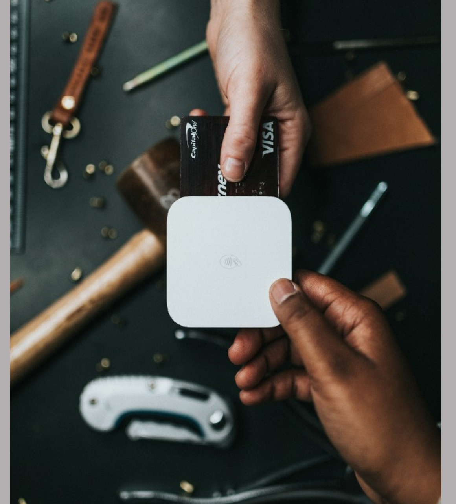
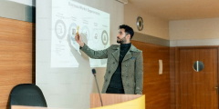

Crédito Semilla
Capital inicial para validar, comprar equipos o lanzar nuevas líneas.
Ver producto
ITAQIN combina financiamiento empresarial, educación práctica, consultoría y software para que las MYPES tomen mejores decisiones y crezcan con estructura.

Diseñamos soluciones para cada etapa: arranque, operación, expansión, gobierno corporativo y acceso a conocimiento.
Capital inicial para validar, comprar equipos o lanzar nuevas líneas.
Ver productoFinanciamiento para inventario, capital operativo y expansión.
Ver productoPreparación financiera para atraer socios e inversión estratégica.
Ver productoControl de gastos, liquidez operativa y reportes por equipo.
Ver productoEntendemos ventas, flujo de caja, costos, historial y objetivo de crecimiento.
Definimos la alternativa de capital y servicios con menor fricción operativa.
Monitoreamos indicadores, educación financiera y herramientas para mejorar gestión.
Capital sin gestión crea deuda. ITAQIN integra mentoría, consultoría, educación y software para mejorar ejecución.

Sesiones con expertos para resolver decisiones comerciales, financieras y operativas.
Planes de mejora para flujo de caja, ventas, costos, procesos y reportes.
Programas prácticos para directivos y equipos de MYPES.
Herramientas para ordenar información y medir indicadores clave.
Acompañamos a MYPES que necesitaban acceso a capital, estructura financiera y disciplina comercial.
“ITAQIN nos ayudó a ordenar flujo de caja, financiar inventario y tomar decisiones con indicadores. El crédito llegó acompañado de criterio.”
Agenda un diagnóstico y recibe una ruta inicial de capital, gestión y herramientas.
Respuestas rápidas antes de iniciar tu evaluación.
ITAQIN ofrece capital y acompañamiento para MYPES: créditos, emisión de acciones, tarjetas, educación, consultoría y software empresarial.
Hablar con el equipo